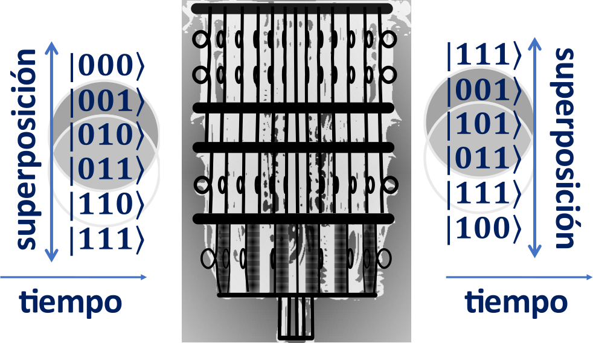
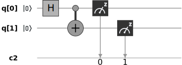
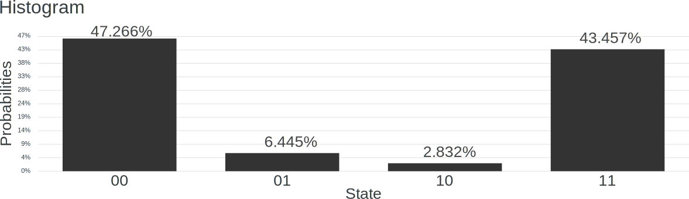

11 Los ordenadores cuánticos
Ciertas propiedades de la mecánica cuántica, tales como el colapso de la función de onda o el entrelazamiento, permiten el desarrollo de nuevos sistemas de comunicaciones sin un análogo clásico. Del mismo modo, uno se puede plantear si es posible aprovechar las propiedades de la mecánica cuántica para crear un nuevo tipo de ordenadores con capacidades muy diferentes a los sistemas de computación existentes.
En 1981, Paul Benioff teorizó sobre una máquina de Turing que utilizaba las leyes de la mecánica cuántica en algunos puntos de la ejecución del programa. Sin embargo, su propuesta implicaba realizar una medida del estado cuántico interno tras la ejecución de cada instrucción, por lo que se perdían muchas de las propiedades cuánticas del sistema y no ofrecía una gran ventaja sobre los sistemas anteriores. En 1982 Richard Feynman planteó que una computadora cuántica –que se basara exclusivamente en reglas cuánticas– podría hacer ciertos cálculos imposibles para un ordenador clásico.1 Este novedoso concepto de ordenador abrió la puerta al desarrollo de nuevos algoritmos que utilizaban en los años siguientes. Entre los avances en esta dirección cabe resaltar el algoritmo de Deutsch-Jozsa publicado en 1992, primer ejemplo que mostraba la ventaja de la computación cuántica sobre la clásica; el algoritmo de Shor en 1994, que permite factorizar números grandes en tiempo polinómico, y el algoritmo de búsqueda de Grover en 1996, que permite encontrar una aguja en un pajar (sin rebuscar demasiado).
Todos estos avances fueron en gran medida de carácter teórico, abstrayéndose de la tecnología que permitiría la construcción de estos ordenadores o cómo se ejecutarían los algoritmos cuánticos en la práctica. Sin embargo, al mismo tiempo que se producían estos avances teóricos, muchas compañías y centros de investigación desarrollaban la tecnología necesaria para la creación de un ordenador cuánticos funcional. Hoy en día, ya existen estos ordenadores y es un área con una rápida evolución. A pesar de que los ordenadores cuánticos todavía operan sobre un pequeño número de cúbits y no permiten realizar operaciones complejas de forma fiable, para ciertas tareas específicas ya consiguen superar a los sistemas de computación clásica más potentes. Este hito, denominado supremacía cuántica, se alcanzó en 2019 con un ordenador cuántico de tan solo 53 cúbits fabricado por Google.2
Uno de los principios que utilizan los ordenadores cuánticos es el concepto de superposición.
11.1 Superposición y paralelismo
A lo largo del curso hemos visto como un estado cuántico no está definido antes del proceso de medida, momento en el cual se resuelve esa aleatoriedad y pasa a mostrar un resultado determinado. Al estado previo a este proceso de medida lo denominaremos superposición cuántica, ya que se puede interpretar como una mezcla o superposición de los posibles resultados del proceso de medida.
Por ejemplo, consideremos un estado puro con donde y son números complejos tales que . Si tomamos este estado y aplicamos una medida con respecto al POVM , obtendremos el resultado ‘’ con probabilidad y el resultado ‘’ con probabilidad . Sin embargo, antes de realizar esta medida, el estado no se encuentra en ninguno de esos dos valores ‘’ o ‘’, sino que se corresponde a una superposición de ambos.
La idea clave detrás de la computación cuántica es aplicar una serie de operaciones y algoritmos, no a un estado definido, sino a una superposición de estados. De esta forma un ordenador cuántico no procesa las entradas de un forma secuencial, sino que tiene la capacidad de procesarlas en forma de superposición. Por tanto, intuitivamente, una de las ventajas de un procesador cuántico es la posibilidad de procesar varias entradas al mismo tiempo:

El potencial de esta idea es evidente si, por ejemplo, pensamos en calcular las salidas de una función booleana para todas sus posibles entradas de bits. Un ordenador clásico necesitaría evaluar la función veces (una para cada posible entrada), mientras un ordenador cuántico podría procesar la superposición de las posibles entradas en una única llamada a la función. Aunque la idea es relativamente sencilla, veremos que conseguir algoritmos útiles con esta técnica es muy complicado y, hoy en día, todavía no existen muchas aplicaciones de esta tecnología.
11.2 Los circuitos cuánticos y su tecnología
Del mismo modo que existen muchos sistemas físicos con propiedades cuánticas, existen múltiples tecnologías que coducen al diseño de un ordenador cuántico de propósito general. Quizás las tecnologías más prometedoras hoy en día son las basadas en osciladores superconductores, en la que se basan por ejemplo los ordenadores cuánticos de IBM o Google, y la basada en iones atrapados, empleada en los ordenadores de Honeywell o IonQ. Aún así, hay otras tecnologías en desarrollo como son procesadores cuánticos fotónicos, o las basadas en aniones abelianos. En cuaquier caso, en esta asignatura nos abstraeremos de la implementación particular del ordenador cuántico y nos centraremos en sus capacidades desde un punto de vista teórico.
Para entender el funcionamiento y capacidades de estos ordenadores es necesario definir algunos conceptos:
- Línea de cúbits: Se corresponde con el estado cuántico interno del procesador. %En función de la potencia del ordenador cuántico, hoy en día, las dimensiones que pueden manejar van desde unos pocos cúbits hasta unas pocas decenas de cúbits.
- Puerta cuántica: Son las operaciones que se aplican a las líneas de cúbits y que se corresponden a una transformación unitaria. Las puertas cuánticas pueden ser de , o incluso de más cúbits.
- Bloque de medida: Aplica una operación de medida a un cúbit determinado, transladando el resultado a una línea clásica, que sólo puede tomar los valores ‘’ y ‘’. %En los ordenares cuánticos esta medida se realiza con respecto al POVM .
- Circuito cuántico: Es una combinación de puertas cuánticas y operaciones de medida aplicadas sobre las líneas de cúbits.
A menudo representaremos los circuitos cuánticos como un diagrama de bloques que incluye las líneas cuánticas de cúbits, las diversas puertas cuánticas que componen en circuito, los bloques de medida, y las líneas clásicas donde se almacena el resultado de esta medida. La siguiente figura muestra un ejemplo de un diagrama de bloques de un circuito cuántico:

Se puede ver que este circuito presenta dos líneas de cúbits, la y la , a las que se les aplican las puertas cuánticas y CNOT (que veremos en detalle en la siguiente sección). Finalmente, en cada una de las líneas se aplica una operación de medida que pasa el resultado a las líneas clásicas etiquetadas como .
Aunque la representación de un circuito cuántico es muy similar a la de un circuito digital clásico, que también está formado por una serie de líneas que conectan puertas lógicas, tanto su implementación física como su interpretación conceptual son muy diferentes:
Circuito digital clásico: Un circuito digital clásico es una representación de su implementación física. Las líneas de este circuito realmente son pistas conductoras que transportan señales eléctricas que se corresponden con los bits ‘0’ y ‘1’. Estas pistas conductoras conectan una serie de puertas lógicas implementadas físicamente con transistores, que transforman las señales eléctricas a su salida.
Circuito cuántico: Un procesador cuántico solamente “almacena” el estado cuántico del sistema. Por su parte, las puertas cuánticas son operaciones que se realizan sobre ese estado. Así, los cúbits del sistema no viajan por las líneas del circuito a través de las puertas cuánticas, sino que son las puertas las que se “lanzan” al estado, modificándolo en el proceso. Un ejemplo sería la tecnología de iones atrapados, donde el procesador cuántico es una cámara de vacío donde se encuentran varios iones en suspensión (los cúbits) a los que se les aplican pulsos láser para controlarlos (las puertas cuánticas). De esta forma, en la figura anterior debemos pensar en las líneas de cúbits de un circuito cuántico como un eje temporal que muestra las operaciones que se aplican sobre los estados iniciales.
Por otra parte, el resultado de la ejecución de un programa en un ordenador clásico, para unas ciertas condiciones iniciales, está perfectamente definido. Sin embargo, como se ha visto en la sección anterior, la salida de un circuito cuántico es aleatoria por naturaleza, ya que es el resultado de un proceso de medida de un estado cuántico. La siguiente figura muestra el resultado de ejecutar el circuito anterior en un ordenador cuántico 1024 veces:

Este gráfico muestra que el de las ejecuciones del circuito el estado medido fue ‘’, el la salida fue ‘’, el fue ‘’, y el fue ‘’. Por tanto, un circuito o un algoritmo cuántico para resolver un problema no tiene por qué ofrecer una solución determinista, sino que éste en general resultará en un resultado aleatorio.
11.3 Decoherencia y métricas de prestaciones
Otra diferencia fundamental entre los sistemas de computación clásicos y los cuánticos es el efecto del ruido. Los ordenadores actuales, al ser digitales, son capaces de corregir pequeñas perturbaciones eléctricas en los circuitos. Por ejemplo, si los bits ‘’ y ‘’ se codifican con un voltaje de y voltios, respectivamente, y en una línea del circuito se observa un voltaje de voltios, se asume que el bit correspondiente en esa línea es el ‘’ y se corrige el voltaje en las operaciones siguientes.
Los procesadores cuánticos, en cambio, son “analógicos” por naturaleza, ya que los estados cuánticos cubren un rango continuo de valores. Por tanto, en estos sistemas los errores se acumulan a lo largo de la computación si no se corrigen de alguna forma. Los ordenadores cuánticos necesitan por tanto un asilamiento perfecto, ya que cualquier iteracción entre los estados cuánticos almacenados y el entorno conduciría a errores en los cúbits y a la pérdida del entrelazamiento, la superposición y de otras propiedades cuánticas. A este efecto se le denomina decoherencia y limita en gran medida las capacidades de un ordenador cuántico.
Definición 11.1 Denominamos tiempo de coherencia de un ordenar cuántico al tiempo medio que transcurre antes de que se produzca un proceso de decoherencia en su estado interno.
Para obtener un resultado válido, la ejecución de una computación cuántica se debe terminar y medir dentro del tiempo de coherencia del sistema. En otro caso el resultado pasa a ser simplemente un ruido aleatorio. Así, las prestaciones de un ordenador cuántico no se pueden medir únicamente con el número de cúbits que es capaz de manejar, sino que también es fundamental su tiempo de coherencia y los tipos de puertas cuánticas que es capaz de aplicar. Por todo ello es realmente difícil comparar tecnologías o incluso ordenadores cuánticos de distintos fabricantes que usan la misma tecnología.
En la actualidad, existen dos estrategias para abordar este problema:
Definir una métrica unificada: Se pueden cuantificar las distintas propiedades que afectan las prestaciones de un ordenador cuántico y combinarlas en una única métrica. Un ejemplo es el volumen cuántico, propuesto por IBM en 2016. Esta métrica de prestaciones tiene en cuenta el número de cúbits, el tiempo de coherencia y las puertas cuánticas que permite aplicar el procesador de forma directa. El resultado es un número que, en principio, permitiría comparar los sistemas de diferentes fabricantes. Hoy en día únicamente IBM y Honeywell utilizan esta métrica.
Benchmarks: Se pueden comparar las prestaciones de dos sistemas diferentes ejecutando un mismo algoritmo. Un ejemplo en computación clásica sería ejecutar un juego y comparar los fps (frames per second) que ofrecen dos ordenadores o plataformas diferentes. En el ámbito de la computación cuántica, esta estrategia fue empleada por Google en 2019 para establecer el hito de la supremacía cuántica. En este caso, se definió un algoritmo concreto que debían ejecutar tanto un ordenador cuántico como un ordenador clásico. El equipo de investigadores demostró entonces que el procesador cuántico podía realizar esta tarea de una forma mucho más rápida que el mejor cluster de computación clásica existente en ese momento.
Dada la diversidad de arquitecturas y los múltiples parámetros que afectan a las prestaciones de un ordenador cuántico, la tendencia actual es utilizar algoritmos o benchmarks para comparar sistemas. Los algoritmos que se utilizan no están todavía establecidos, y en general no realizan tareas de utilidad práctica, sino que estan diseñados para mostrar las fortalezas del sistema. Por ejemplo, la tarea considerada en el hito de la supremacía cuántica de Google fue la ejecución de un circuito cuántico aleatorio. Así, a grosso modo, este hito simplemente demostró que un ordenador cuántico es más eficiente que un ordenador clásico simulando un cierto circuito cuántico, pero sin ninguna utilidad real.